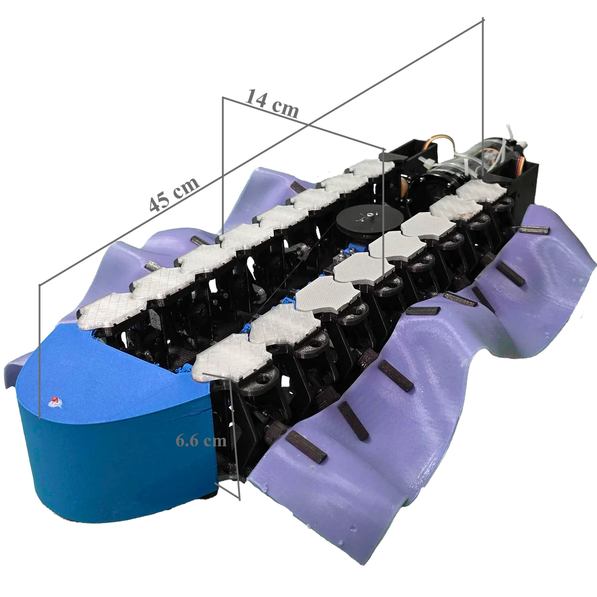
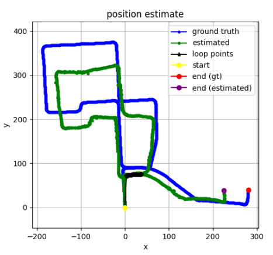
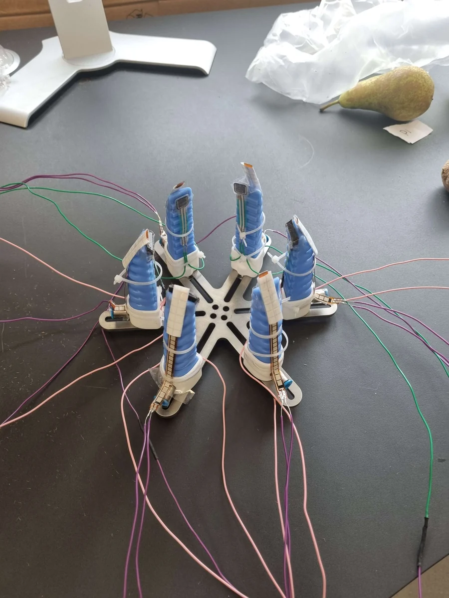
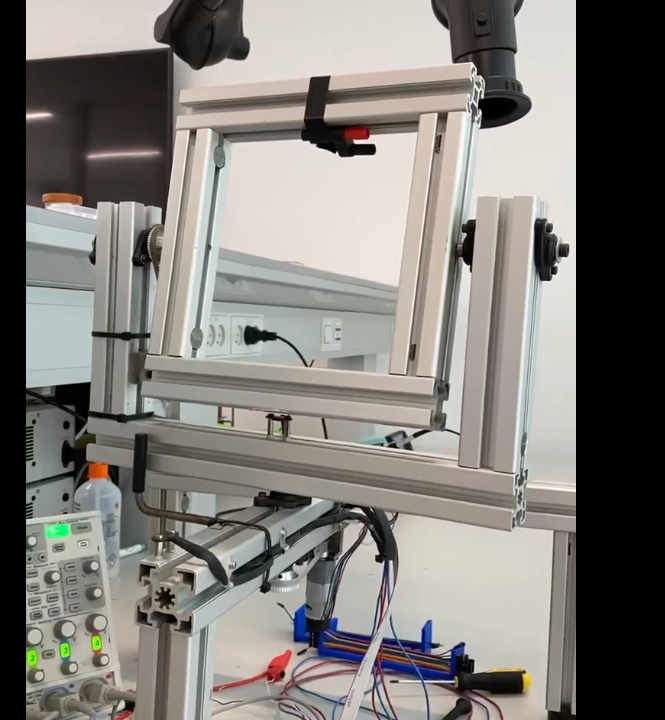
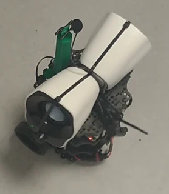
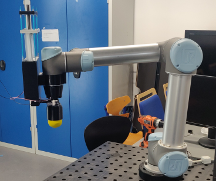
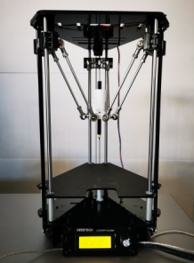

Projekter
Projects
Projektforløb
Project Portfolio
Blæksprutte-inspireret modulær blød robot
Cuttlefish-Inspired Modular Soft Robot

Mit kandidatprojekt om en modulær undervandsrobot med egenudviklet mekanik, fremdrift og styring.
My master's thesis on a modular underwater robot with custom mechanics, propulsion and steering.
Mit afsluttede kandidatprojekt i robotteknologi. På baggrund af projektet udarbejder jeg en separat forskningsartikel med henblik på journal-publicering. Jeg designede og byggede en bio-inspireret modulær undervandsrobot med laterale bølgefinner, kamakselmekanisme, senetrukket styring og trådløs drift. Robotten opnåede 3,6 cm/s fremadsvømning med stabil kursstyring og differential-drev manøvrering.
My completed master's thesis in robotics. Based on the project, I am preparing a separate research paper for journal publication. I designed and built a bio-inspired modular underwater robot with lateral undulatory fins, an eccentric camshaft mechanism, tendon-driven steering and wireless untethered operation. The robot achieved 3.6 cm/s forward swimming with stable head steering and differential-drive manoeuvring.
Dataindsamling til automation med robotsimulering og digital twin
Automation Data Collection with Robot Simulation and Digital Twin

Experts in Teams-projekt om at indsamle og sammenligne data fra fysiske robotter og deres digitale tvilling/simulering for bedre driftssikkerhed.
Experts in Teams project focused on collecting and comparing data from physical robots and their digital twin simulations to improve reliability.
Udviklede en modulær data-pipeline til automation, hvor data blev indsamlet, processeret, lagret og visualiseret med fokus på driftssikkerhed og skalerbarhed. Løsningen brugte en edge-enhed, caching ved cloud-nedbrud og dashboards til realtidsindsigt i robotsimulering og fysisk systemadfærd.
Developed a modular data pipeline for automation where data was collected, processed, stored and visualised with a focus on reliability and scalability. The solution used an edge device, local caching during cloud downtime, and dashboards for real-time insight into robot simulation and physical system behaviour.
Visual SLAM til autonom kørsel
Visual SLAM for Autonomous Driving

Projekt i avanceret robotteknologi om Visual SLAM med feature-baseret visuel odometri og loop closure på KITTI-datasættet.
Advanced robotics project on Visual SLAM with feature-based visual odometry and loop closure using the KITTI dataset.
Implementerede og evaluerede en Visual SLAM-løsning til autonom kørsel med ORB- eller SIFT-features, bundle adjustment og loop closure. Projektet fokuserede på at rekonstruere kørselsforløb og reducere fejl gennem forbedret kortlægning og lokalisering.
Implemented and evaluated a Visual SLAM pipeline for autonomous driving using ORB or SIFT features, bundle adjustment and loop closure. The project focused on reconstructing vehicle trajectories and reducing error through improved mapping and localisation.
Sensorbaseret blød griber til frugtidentifikation
Sensorised Soft Gripper for Fruit Identification

Bachelorprojekt om en blød griber med sensorer og klassifikation af frugt under selve grebet.
Bachelor project on a soft gripper with sensors and fruit classification during grasping.
Mit bachelorprojekt i robotteknologi om en blød griber til skånsom håndtering og klassificering af æbler, appelsiner, pærer og kiwier. Jeg integrerede flex- og kraftsensorer, indsamlede data via Arduino og UART og sammenlignede Random Forest med LDA. Systemet opnåede op til 93 % korrekt identifikation i live-tests uden at beskadige frugten.
My bachelor project in robotics, focused on a soft gripper for delicate handling and classification of apples, oranges, pears and kiwis. I integrated flex and force sensors, collected data through Arduino and UART, and compared Random Forest with LDA. The system achieved up to 93% correct identification in live tests without damaging the fruit.
Pan/tilt-system med PI/PID-regulering
Pan/Tilt System with PI/PID Control

Semesterprojekt om styring af en stabil kameraplatform med position- og hastighedsregulering via mikrocontroller og FPGA.
Semester project on controlling a stable camera platform with position and velocity regulation through a microcontroller and FPGA.
Designede PI- og PID-regulatorer til pan- og tilt-aksen, implementerede PWM-styring og kommunikation mellem Tiva og FPGA via SPI. Projektet kombinerede reguleringsteknik, Simulink, root locus og embedded implementering.
Designed PI and PID controllers for the pan and tilt axes, implemented PWM control, and established communication between a Tiva microcontroller and an FPGA over SPI. The project combined control theory, Simulink, root-locus methods and embedded implementation.
Robotstyring via DTMF-lyd
Robot Motion Control via DTMF Audio

Semesterprojekt om lydbaseret robotstyring via DTMF med robust protokol og præcis udførelse.
Semester project on DTMF-based robot control with a robust protocol and precise execution.
Udviklede en kommunikationsprotokol, der omsatte en planlagt rute til DTMF-toner, afkodede signalet med DFT og sendte bevægelseskommandoer til en TurtleBot3. CRC-15, acknowledgements og pakkenumre sikrede robust dataoverførsel, mens MQTT og ROS stod for udførelsen på robotten med en bevægelsesnøjagtighed på ±2 cm.
Developed a communication protocol that translated a planned route into DTMF tones, decoded the signal using a DFT, and sent motion commands to a TurtleBot3. CRC-15, acknowledgements and packet numbering provided robust transmission, while MQTT and ROS handled execution on the robot with movement accuracy of ±2 cm.
Ballon-/jamming-griber til UR5 pick-and-place
Balloon / Jamming Gripper for UR5 Pick-and-Place

2. semesterprojekt om udvikling af en jamming-griber og et komplet styresystem til UR5, mikrocontroller og database.
2nd semester project on developing a jamming gripper and a complete control stack for UR5, microcontroller and database integration.
Udviklede en soft/jamming-griber til håndtering af små komplekse emner samt software til styring via UR5, RS232/UART og databaseintegration. Systemet blev implementeret i C++ med MODBUS til robotten og MySQL til datalagring.
Developed a soft/jamming gripper for handling small complex objects together with software for UR5 control, RS232/UART communication and database integration. The system was implemented in C++ using MODBUS for the robot and MySQL for data storage.
Tegnerobot med billedanalyse og automatisk blyantspidsning
Drawing Robot with Image Analysis and Automatic Pencil Sharpening

Semesterprojekt om at konvertere billeder til robottegninger med generering af g-code og automatisk styring af blyantspidser.
Semester project focused on converting images into robot drawings through g-code generation and automatic pencil sharpener control.
Udviklede et system, der analyserede et inputbillede, genererede g-code og fik robotten til at illustrere motivet. Projektet omfattede også test af blyantslid, redesign af blyantspidser og udvikling af et custom kredsløb, så spidseren kun blev aktiveret ved behov.
Developed a system that analysed an input image, generated g-code, and enabled a robot to reproduce the drawing. The project also included testing pencil wear, redesigning the sharpener, and building a custom circuit so sharpening was only triggered when needed.